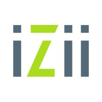

Raphael Cordeiro Santos Gonçalves
Analista Protheus Senior | ADVPL | TOTVS Protheus | Financeiro | Faturamento | Plano de Saúde | Call Center
Taboão da Serra, São Paulo, BrasilResumo
Profissional de TI com mais de 14 anos de experiência como Analista de Sistemas, especializado no sistema ERP TOTVS Protheus. Acumulando um vasto conhecimento em análise, desenvolvimento e implementação de soluções tecnológicas utilizando o Protheus. Capacidade de liderança, otimização de processos e colaboração em equipe.
- ERP Protheus
- ADVPL / TLPP
- SQL
- Oracle
- Rest / SOAP
- Jira Software / Jira Service Desk
- Tecnologia GIT
- GitHub / Bitbucket
Habilidades destacadas:
Experiência
Full Service Especialista em Cibersegurança
Analista de sistemas sênior setembro de 2023 - Present (8 meses) São Paulo- Manutenção e configuração do Protheus
- Manutenção e desenvolvimento de melhorias em ADVPL
- Trabalhando com os módulos: Faturamento, Financeiro, Gestão de Pessoal, Call Center e Plano de Saúde
- Controle de atualização e versionamento dos códigos fonte da empresa através do Git
- Suporte para a equipe para planejamento e execução de tarefas
Responsabilidades:

IZII
Analista de sistemas sênior dezembro de 2018 - agosto de 2023 (4 anos 9 meses) São PauloResponsabilidades:
Em todo o tempo na empresa exerci o papel de analista de sistemas, dando manutenção e desenvolvendo melhorias no software, porém com o passar do tempo fui acumulando novas responsabilidades, sendo o responsável pela administração do sistema, fazendo o controle de atualização e versionamento dos fontes, liderando a equipe de sustentação e zeladoria, entre outras tarefas ao longo de mais de 13 anos de experiência com o produto e tecnologia.
Divicom
8 anos 7 mesesAnalista de sistemas Pleno novembro de 2011 - novembro de 2018 (7 anos 1 mês) São Paulo
Responsabilidades:
Após o período de estágio, fui efetivado na empresa, e segui evoluindo na área, realizado tarefas mais complexas, alguns desenvolvimentos maiores como o sistema de controle e distribuição de Leads para o Call Center, desenvolvimento de um complexo sistema de premiações, migrações de versão do sistema Protheus, auxílio na transição do sistema para o Cloud Totvs, novidade na época, entre outras atividades.
Estagiário em sistemas maio de 2010 - novembro de 2011 (1 ano 7 meses) São Paulo
Responsabilidades:
Como estagiário na Divicom tinha como funções, realizar manutenções simples em fontes, desenvolvimento de relatórios e auxiliar os demais analistas em tarefas maiores.
Formação acadêmica
Universidade Presbiteriana Mackenzie
Bacharel em Ciência da Computação
Período: 2006 - 2011
Senac São Paulo
Curso Técnico Integrado, Tecnologia da Informação
Período: janeiro de 2005 - junho de 2006